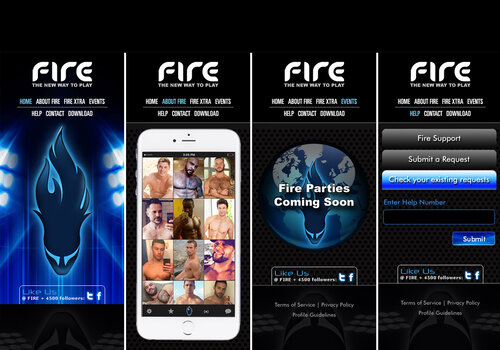
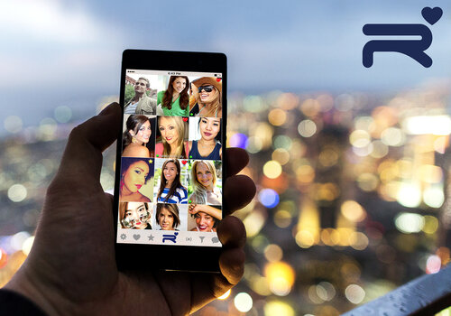

Target Markets, Branding, and Logos: My Passion for Marketing
As a I grew older, I became interested in how companies used branding to connect with their target
audience, leading me to earn a Bachelor of Science in Marketing from University of New Orleans. After
graduation, I pursued my entrepreneurial venture where I created two of my own brands, Fire and
Razzou, to launch one of the first dating apps!


CEO at 23-Years-Old: My Cross-Country Journey to Launch Razzou.
Leaving my tiny hometown in Louisiana with little money but a solid business plan, I began raising
capital to develop and launch my app. On my own, I raised $200,000 in capital to finance the launch
of my dating app, named Razzou, which earned over 100,000 users worldwide.
Managing a Start-up
As CEO of an early-stage, start-up company, I confronted a new set of seemingly insurmountable
obstacles every day. My responsibilities included resolving tech issues as quickly and efficiently
as possible, while remaining flexible and adaptable enough to overcome any unforeseen difficulties.
When the app’s server failed, for example, thousands of profile photos were lost, and I had to figure
out how to get them back—then make sure it couldn’t happen again.
I also managed the business, overseeing numerous concurrent development projects and budgets. I
conducted frequent analyses of leading competitors, studying their app interfaces, target markets,
business models, and pricing, all while keeping up with innovations in the smartphone market to
maintain a competitive edge. My job also required continuous reporting to company investors and the
nurturing of key business relationships.
TODAY
Discovering My UX Design Skills
Undoubtedly my favorite task as CEO was ensuring that Razzou offered its 100,000 users an exciting
mobile dating experience. Over time, other dating apps flooded the market with million-dollar
marketing budgets and Razzou could not financially compete. So after spending over six years on
the project, I decided to take the invaluable skills learned from this experience and turn my
passion for UX Design and Product Management into an exciting career.
Please click the images below to view my work.